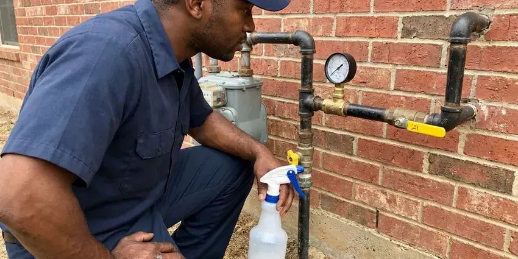
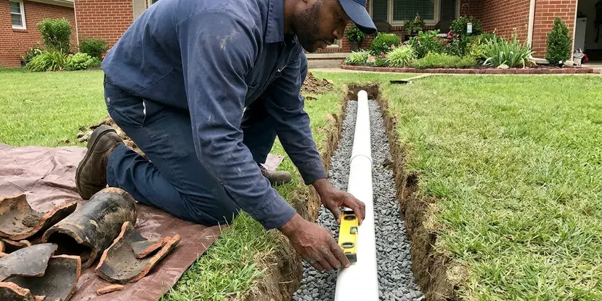

Septic Tank Repair in Largo, FL
If your septic tank is acting up in Largo, FL, HDF Plumbing is ready to help. Our experienced technicians provide prompt and effective repairs.
- Upfront Quotes
- Guaranteed Work
- Experienced Local Technicians
- Licensed Florida Plumbers
Facing Septic Tank Trouble in Largo, FL?
Our team is ready to provide efficient and lasting septic solutions for your property.
Dependable Septic Tank Repair for Largo, FL Homeowners
HDF Plumbing is a leading choice for septic tank repair in Largo, FL. We understand the challenges Florida properties face with their septic systems, from soil conditions to heavy usage.
Our expertise includes:
- Effluent pump, float switch and high water alarm service
- Septic pump and alarm system testing.
- Fixing baffle failures and inlet and outlet pipe problems.

Additional Plumbing Repair Services in Largo, FL
We offer expert plumbing repair services across Largo, FL to fix leaks, restore flow, and keep your system running smoothly.




Gas Leak Repair in Largo

Customers
Why Choose HDF Plumbing for Septic Tank Repair in Largo, FL?
When your septic system fails, you need a plumbing company that responds quickly and knows how to get the job done right. HDF Plumbing is that partner, committed to restoring your peace of mind.
- Permit Savvy, We coordinate with local environmental health officials when a repair requires approval.
- Local Expertise, Our team understands the local soil conditions and regulations for septic systems in Largo, delivering compliant and effective repairs.
- Advanced Tools, We use modern diagnostic equipment, like sewer cameras and hydro-jetting, to precisely pinpoint and clear septic line blockages without extensive excavation.
Citywide Coverage
No matter where you are located within Largo, our expert team is available to provide prompt and professional septic tank repair services. We cover the entire area so no homeowner is left with a broken system.
Experienced Team
Each HDF Plumbing technician is highly skilled in diagnosing and repairing complex septic system issues. You can trust our professionals to handle your septic tank with precision and expertise, ensuring a long-lasting fix.
Safety-First Approach
Septic tanks hold harmful gases and bacteria, so we never enter a tank and we use proper ventilation and protective gear. Open tanks are covered or guarded at all times while we are on site.
Trusted Certified Largo Plumbing Services Professionals
At HDF Plumbing, we take pride in providing certified plumbing services throughout Largo, FL. Backed by recognized industry credentials, our experienced plumbers combine technical skill with genuine customer care. Whether it is repair, installation, or maintenance, we follow strict safety and quality standards to deliver lasting results you can trust.
Call Us Now PHCC Plumbing Contractor Recognition
PHCC Plumbing Contractor Recognition Better Business Bureau (BBB) Accreditation
Better Business Bureau (BBB) Accreditation Angi Certified Pro
Angi Certified Pro ISO 9001 Quality Management Certification
ISO 9001 Quality Management CertificationReliable Septic Tank Repair Services in Largo, FL
Septic Tank Alarm Troubleshooting in Largo
Many modern septic systems, especially those with pumps or advanced treatment units, include alarms to warn of high water levels or system malfunctions. If your septic alarm is sounding in Largo, it is a clear sign of trouble. HDF Plumbing technicians can quickly troubleshoot the cause of the alarm, whether it is a float switch issue, pump failure or a clogged line, and perform the needed repairs to silence the alarm and restore system balance.

Leach Field Repair in Largo, FL
Soggy ground, strong odors or lush grass over the field can point to a struggling disposal area. Causes include clogged distribution pipes, a crushed distribution box or soil sealed by solids. We jet clean lines, replace distribution boxes and determine whether the field can be restored. If replacement is needed, we explain the design and permit steps.
Effluent Pump Repair in Largo, FL
Homes with uphill or distant fields often use an effluent pump in a pump tank. Failed pumps, stuck floats or tripped breakers trigger high water alarms. We test the pump, float switches and control panel and replace failed parts. A working alarm gives you warning before sewage backs up.
Emergency Septic Tank Repair in Largo
Septic emergencies, like severe backups or overflowing tanks, require urgent attention. HDF Plumbing offers emergency septic tank repair services in Largo to address urgent issues promptly. We understand that these problems can arise at any time, and our rapid response team is equipped to diagnose and resolve critical failures, minimizing damage and restoring your home's sanitation as quickly as possible.
Septic Inlet Line Repair in Largo
The line from your house to the tank can crack, sag or separate from soil movement and roots. Symptoms include gurgling drains and backups even after pumping. We camera the line to locate the problem and repair or replace the damaged section. A cleanout near the tank makes future maintenance simpler.
Septic Tank Leak Repair in Largo
Septic tank leaks can lead to foul odors, soggy spots in your yard and potential groundwater contamination. Our technicians use dye testing and camera inspections to locate the source of the leak, whether it is a crack in the tank or a failed pipe connection. We provide durable repair solutions using purpose-made sealants and patching materials designed for the harsh environment of a septic tank in Largo, ensuring a watertight seal and preventing future issues.
Septic Tank Lid and Riser Repair in Largo
Cracked or deteriorated concrete lids are a real safety hazard. We replace failing lids and install risers that bring access up to grade. Risers make pumping and inspection quicker and cheaper over time. Secure, child-resistant lids are standard on our installations.

Commercial Septic System Repair in Largo, FL
Commercial properties often have larger, more complex septic systems that demand specialized repair knowledge. HDF Plumbing provides full septic tank repair for businesses throughout Largo, FL, understanding the challenges of high-volume usage and diverse waste streams. We ensure your commercial septic system operates efficiently, preventing costly downtime and maintaining compliance with health regulations.
Septic Tank Repair Near Me in Largo, FL
Our local presence means quicker response times and technicians familiar with the septic system challenges common in Largo homes. Whether you are in an older neighborhood or a newer development, HDF Plumbing is the reliable choice for septic tank repair near you.
When you search for 'septic tank repair near me' in Largo, FL, HDF Plumbing is your trusted local expert. Our nearby crews allow us to respond quickly to your septic emergencies and routine service calls.
HDF Plumbing at a Glance
- Fully licensed plumbing team covering Largo, FL
- Same-day appointments and 24/7 emergency response
- Upfront, flat-rate pricing before work begins
- 4.9-star rated by 739+ Florida customers
Largo Map
Largo Information
- Population
- 82,248
- Area codes
- 727/813/941
- Service area
- Largo and communities within 40 miles
- Nearby
- Pinellas Park, Clearwater, Palm Harbor, St. Petersburg
Pumping the tank on a routine schedule and keeping grease and wipes out of drains helps septic systems in Florida last longer. Timely septic repair around Largo, FL prevents backups and costly field replacement.
Expert Services
Trust our professionals for reliable HDF Plumbing solutions in Largo, FL.
Our Specialized Plumbing Services in Largo, FL
At HDF Plumbing, we provide a complete range of plumbing services across Largo, FL. From leak detection to full system installations, our team ensures fast, precise, and affordable service for both residential and commercial properties. Explore our core services below:


How Our Septic Tank Repair Process Works in Largo, FL
Our step-by-step approach to septic tank repair in Largo, FL guarantees a thorough diagnosis and lasting solution for your plumbing issues.
Request a Quote
Call (904) 925-7356 and describe your symptoms, such as slow drains, alarms or odors. Let us know when the tank was last pumped if you can.
Inspect and Locate
We locate and open the tank, check baffles, filters and pumps and camera the lines as needed. You get written repair options with prices.
Repair and Document
We complete the repair, test flow through the system and close everything up safely. You receive documentation of the work for your records.
Frequently Asked Questions About Septic Tank Repair in Largo
Common repairs such as baffle replacement run $300 to $900, and effluent pump replacement usually costs $900 to $2,000. Leach field work can range from $5,000 to $20,000 or more. We provide a firm price after inspection.
To extend your septic system's life, keep up regular pumping every 3 to 5 years, avoid flushing non-biodegradable items, minimize harsh chemical use, conserve water and keep vehicles off the drain field. Regular inspections by HDF Plumbing can also catch small issues before they become bigger problems.
The duration of a septic tank repair depends on the complexity of the issue. Simple clog removals might take a few hours, while more extensive repairs like drain field work could span several days. We will provide an estimated timeline during our initial assessment.
Most additives are not needed for a healthy system. Regular pumping, water conservation and keeping grease and wipes out of drains do much more.
Watch for slow drains, gurgling pipes, sewage odors, high water alarms, wet spots over the field or sewage backing up into tubs. Any of these warrants a prompt inspection.
For minor repairs like baffle replacement, a permit may not be required. Major repairs that involve excavation, major pipe replacement or any work on the drain field typically require permits from the local health department or building authority in Largo, FL. HDF Plumbing will help you navigate the permitting process and make sure all work is compliant.
Septic tank repairs are complex and can be hazardous, involving exposure to raw sewage and potential soil contamination. It is highly recommended to hire a licensed professional like HDF Plumbing so the repair is done safely, effectively and in compliance with local health codes.
The length of septic tank repair depends on the complexity of the issue. Simple repairs like a baffle replacement might take a few hours, while more extensive work such as drain field repair or pipe replacement could take one to several days, especially if excavation is involved. Our technicians will provide an estimated timeline during the diagnosis.
What People Are Saying About Our Plumbing Experts?

Robert G.
The trenchless sewer replacement saved our front yard. They walked us through the camera inspection footage first so we knew exactly what we were paying for.
Sewer Line Replacement · Town 'n' Country, FL
Patricia H.
We had a slab leak that two other companies could not find. HDF Plumbing located it in under an hour, explained our options, and the price matched the quote to the dollar.
Slab Leak Repair · Tampa, FL
Laura S.
I scheduled a water heater replacement, and the team made the process smooth and affordable. The new unit works perfectly, and they cleaned up after completing the job.
Water Heater Replacement · Palm Harbor, FLSofia M.
Two new toilets installed in one visit, no mess left behind, and the tech even adjusted a faucet he noticed was dripping. Fair pricing and really friendly.
Toilet Installation · Palm Harbor, FL
Mark T.
When our office needed drain cleaning, HDF Plumbing provided quick, reliable service. The plumber arrived on time and made sure every drain flowed perfectly before leaving. Very satisfied.
Drain Cleaning · Largo, FL
Emily R.
I called HDF Plumbing for plumbing repair, and the technician was fast, polite, and thorough. They explained the problem clearly and fixed it the same day. I will definitely hire them again. Highly recommended!
Plumbing Repair · Largo, FL